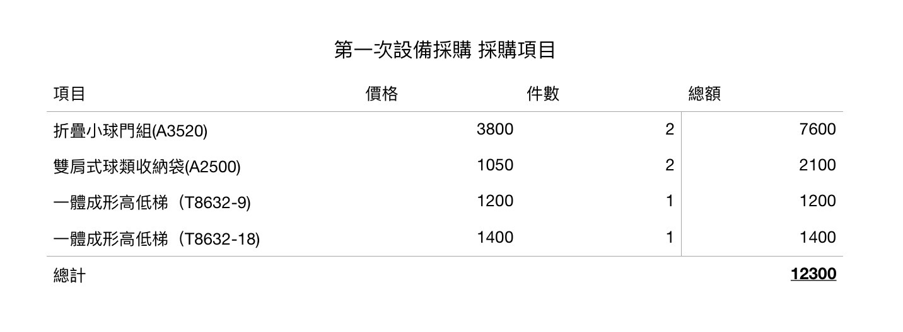
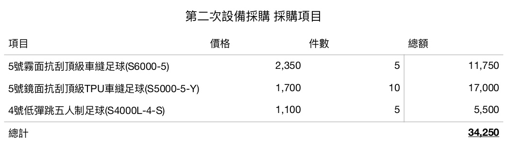

杜品鋒
杜品鋒，國中時加入朋友的雨宮家族，故網名雨宮墨影。
#杜品鋒 #玉衡 #雨宮墨影 #高一班長 #高一班代 #(市)大同足球社幹部:設備
面試講義（就是我個人見解，不代表官方）
如果你要找學校的任意處（ㄔㄨˋ）事，首先你得先向訓育組詢問意見，然後再依指示去執行，但事前得先預測（揣摩上意）去準備資料，雖然可能全部沒用，但如果矇中了做事效率增加，各處事對你也會有好印象。
但好印象是無量化標準的，處事多半也是對事不對人，所以，幹練的手法，完整的資料才是硬道理。
作為社長
遠見和野心格外重要，畢竟現在這棟足球大廈仍然是危樓我們需要內可服眾，外兼宣傳的新主，所以，有打通九路的能耐，和副社長能完美配合的人才是我們的最佳人選。
但如果找不到合適的八面來風人選呢？或許只能退而求其次，選擇那個穩健，察納雅言的人，要有野心，對辦活動不感冒，且能獨當一面撐起每一場活動的指揮官，而且要開創新的項目，推廣宣傳社團。
作為副社長
要幫社長分憂解難，也要有野心，有時候你跟社長是生命共同體，你們要同時知道相同的資訊，不能有訊息差。
作為其他幹部
如果不要出包的方法就是要傳給社長的訊息先傳給副社長，並附上一句「如果沒有問題，請幫我轉給社長」
作為公活
向其他社團接洽的時候，請先去找他們社的公活，為了這一步方便，所以才衍生出了打公關的活動，如果行有餘力，學長可以幫你們牽線，注意，上幹第一件事是先去找友社打公關！
作為設備
請拿出滿滿的道德觀，不要貪污，不要被金錢迷昏了腦，如果昏了來找我，我把你幹醒。
作為總務
算好錢，做好報表就行。
作為文書
請在第一時間生出家同，會議記錄等等，請用盡一切科技手段，效率高就行。
作為教學
顧名思義，要會教，你就是教練，教練該幹嘛，你就要幹嘛，甚至大膽一點說，我們可以不要教練，但要一個會教的教學。
作為機動
請去問你的直屬，我不熟機動。
足球社預算採購資訊公開區
聯絡管道 instagram:@雨宮墨影

